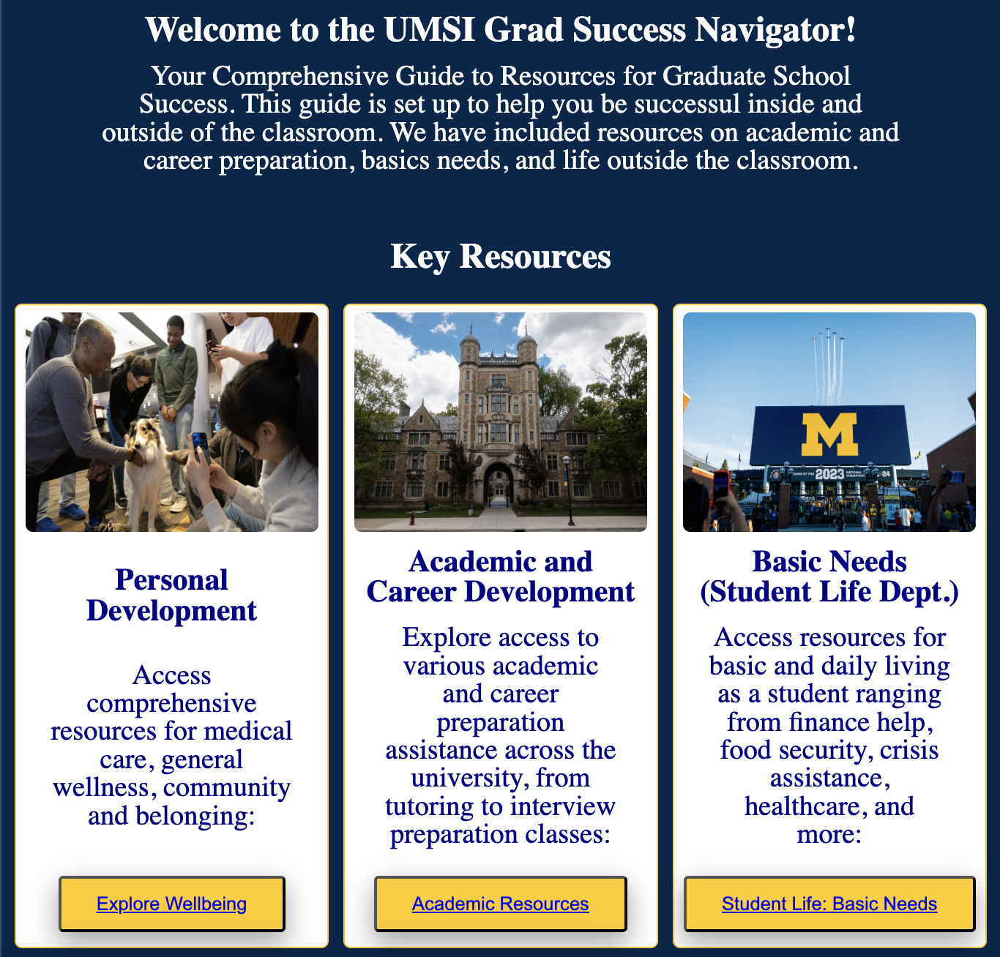
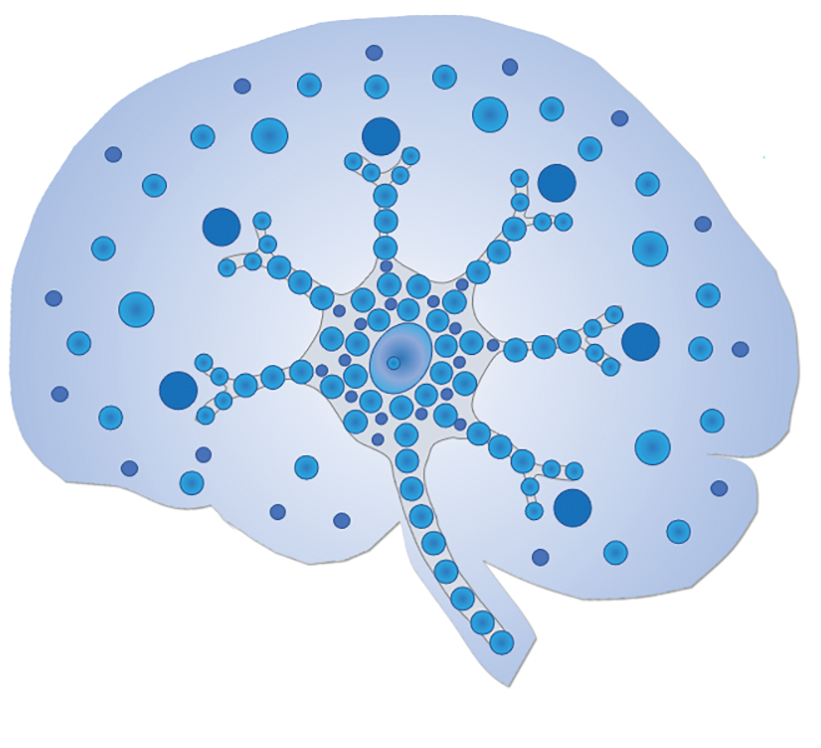

Tori Turpin
Front End Developer
Hi, I'm Tori!
I’m the Research Project Manager at the Harvard Brain Tissue Resource Center! I am also a first year Masters of Information student at the University of Michigan focusing on User-Centered Agile Development. Enjoy!
Skills
HTML
CSS
JavaScript
Matlab
Linux
MySQL
MS Access
Git
Python
UX Design
Usability Testing
REDCap
SPSS
Projects
Brain Legacy Demo
Mobile App built with Uizard
Platform to streamline post-mortem donation medical record procurement

Student Success Website
HTML, CSS, & Javascript

Harvard Brain Bank
Website Development
HTML, CSS, Bootstrap, YAML
Human Connectome Project
fMRI based connectivity project